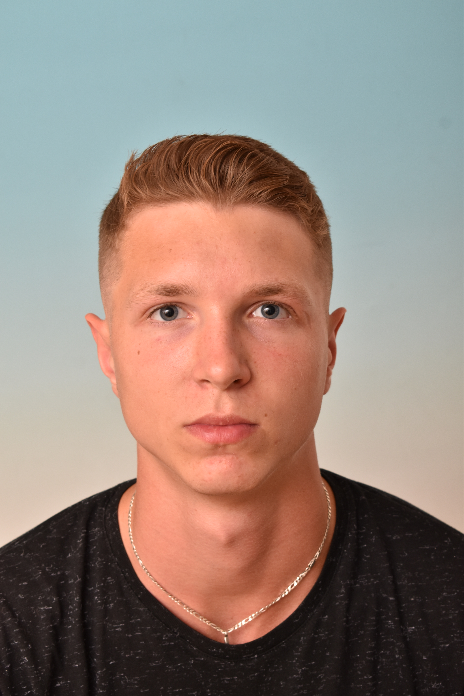

Matouš Drahoňovský

Summary
"Dynamic and accomplished 22-year-old professional volleyball player
with a strong foundation in Biomedical Technology.
Known for dedication to both sports and academics,
complemented by a burgeoning passion for web development.
Demonstrates innate curiosity, determination, and
a commitment to continuous learning. A versatile and
promising individual poised to excel in various
endeavors."
Education
- 09/2016 High school of mechanical engineering and eletrotechnics in Liberec
STUDY PROGRAMME: mechanical engineering
- 09/2026 Brno universioty of technology
STUDY PROGRAMME - Biomedical Technology and Bioinformatics
Work experience
- 07/2018 3 weeks Sonad Engineering s.r.o. – tool shop – material preparation
- 08/2018 2 weeks MOLD-TECH STANDEX BOHEMIA s.r.o. – masking injection molds
- 02/2019 1 week Sonad Engineering s.r.o. – tool shop – material preparation
- 05/2019 3 weeks CVG - Comercial Vehicle Groups – Cabel harness manufacturing
Skills
Language skills
- English - intermediate
- Deutsch - beginner
Other skills
- MSoffice
- CAD system – solidworks
- Progaming lenguage - Python
Other